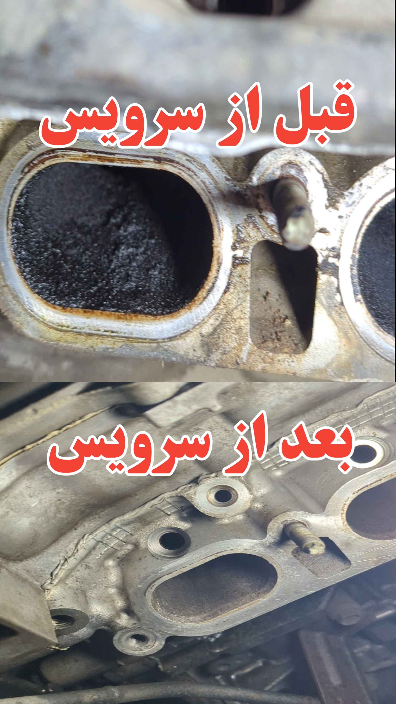
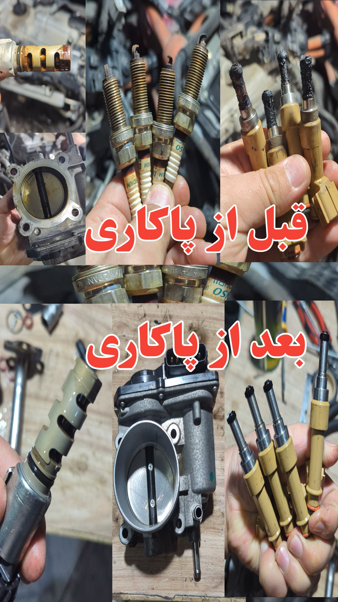
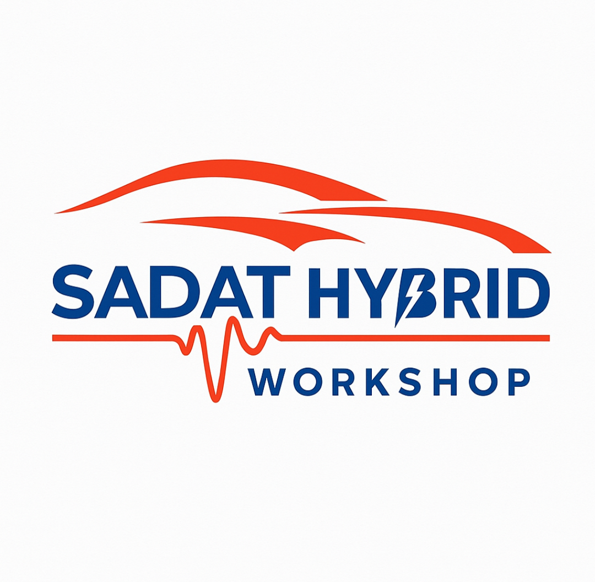
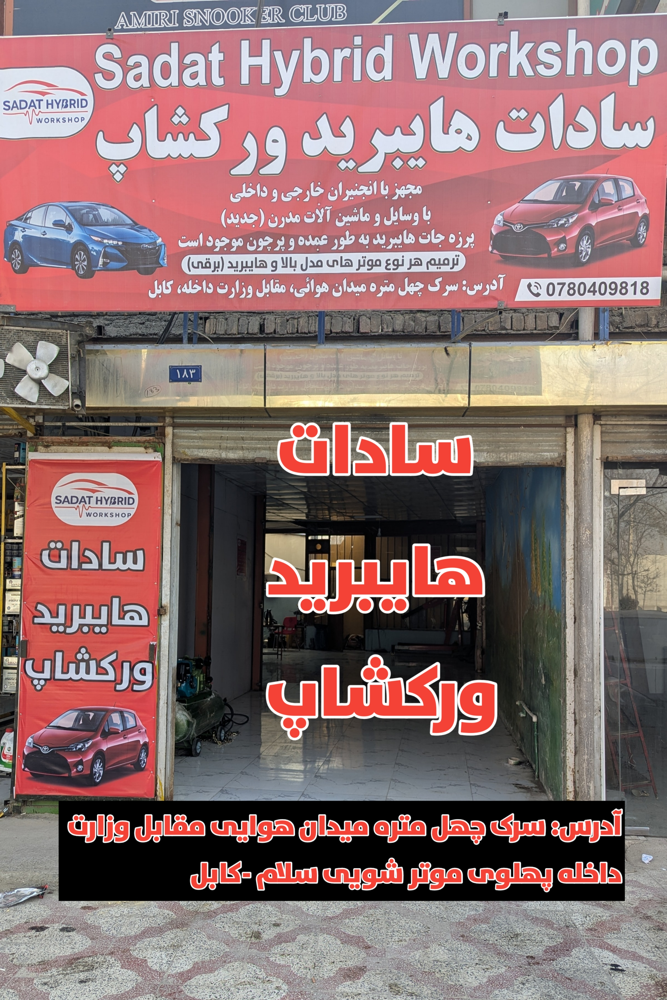
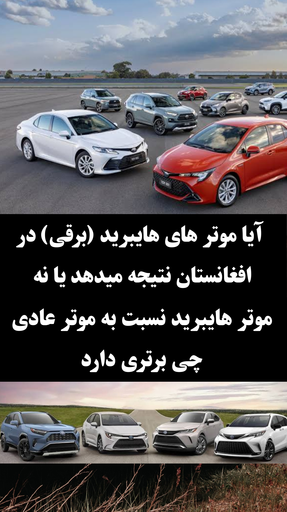
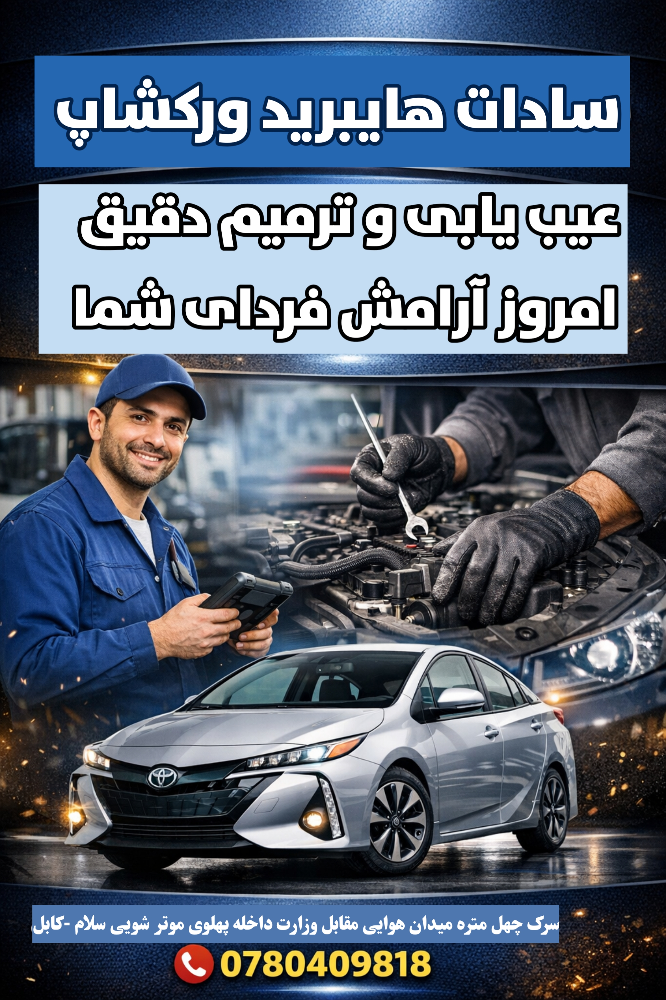
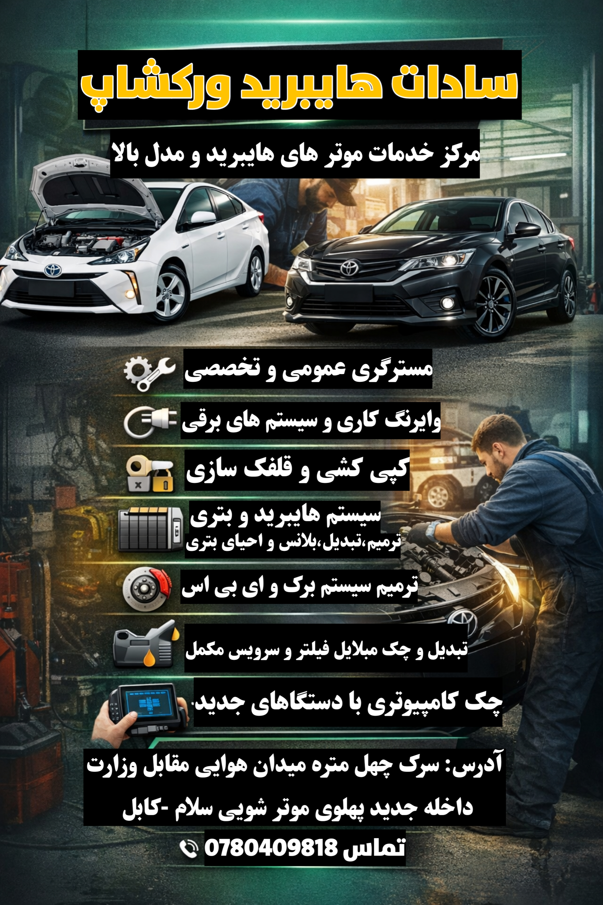

قبل و بعد از سرویس و پاککاری
نمونههایی از کارهای انجامشده در ورکشاپ





ترمیم تخصصی موترهای هایبرید و مدل بالا، احیای بطری، بلانس بطری، بریک و ABS، وایرنگ، مستریگری، کوپیکشی، سرویس مکمل و چک کامپیوتری با دستگاههای جدید.

تمام خدمات مهم ورکشاپ در یک جا
احیای بطری، تست، عیبیابی، تقویت سلولها، ریکندیشن و آمادهسازی بطری قبل از تعویض.
بلانس دقیق بطری برای ولتاژ برابر، قدرت بیشتر، مصرف کمتر و عملکرد بهتر موتر.
خدمات مستریگری برای موترهای عادی و هایبرید با بررسی دقیق و کار اصولی.
تشخیص و ترمیم مشکلات برق، سنسرها، سیمکشی، اتصالات و سیستمهای الکترونیکی موتر.
خدمات کوپیکشی و قلفکسازی برای موترها با دقت و ابزار مناسب.
ترمیم و سرویس سیستم بریک و ABS برای افزایش مصونیت و جلوگیری از خرابیهای خطرناک.
تعویض و چک موبلایل، فیلتر، روغن بریک و دیگر موارد مهم سرویس دورهای.
چک کامپیوتری با دستگاههای سکینر جدید برای پیدا کردن خطاها و عیبیابی سریع.
خدمات تخصصی برای موترهای هایبرید و مدل بالا با تجربه عملی و ابزار پیشرفته.
نمونههایی از کارهای انجامشده در ورکشاپ


سادات هایبرید ورکشاپ مرکز تخصصی موترهای هایبرید و مدل بالا در کابل است. ما با استفاده از تجربه کاری، وسایل و ماشینآلات جدید، خدمات باکیفیت در بخشهای احیای بطری، بلانس، ترمیم، عیبیابی، مستریگری، بریک و ABS، وایرنگ و سرویس مکمل ارائه میکنیم.
عکسهای ورکشاپ، تابلو، بطری هایبرید، خدمات و محیط کاری







چند سوالی که مشتریان بیشتر میپرسند
خیر. در بعضی موارد بطری قابل احیا، بلانس و ترمیم است و نیاز به تعویض کامل ندارد.
روشن شدن چراغ خطا، کم شدن قدرت موتر، مصرف زیاد، و اختلاف ولتاژ از نشانههای مهم است.
نه. خدمات مستریگری، بریک، ABS، وایرنگ، کوپیکشی و سرویس دیگر موترها را نیز انجام میدهیم.
برای مشاوره، نوبت، قیمت، احیای بطری، بلانس و دیگر خدمات با ما در تماس باشید.